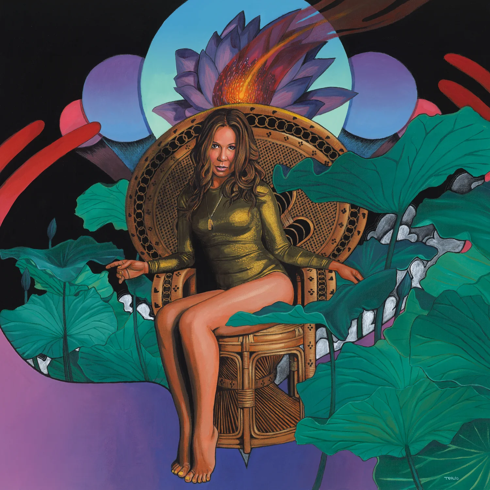
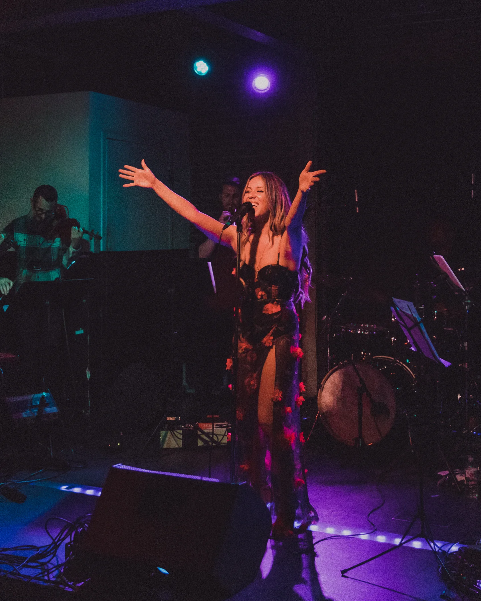
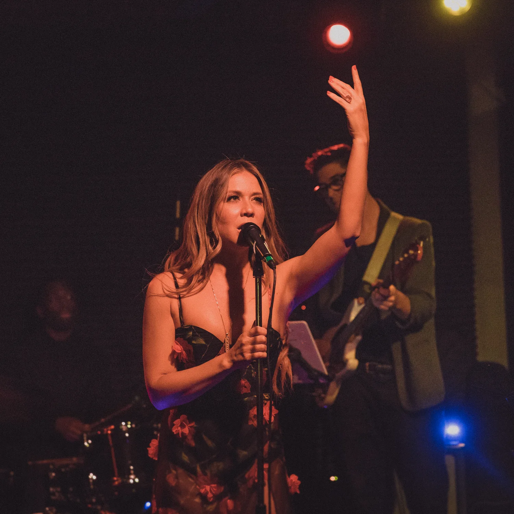
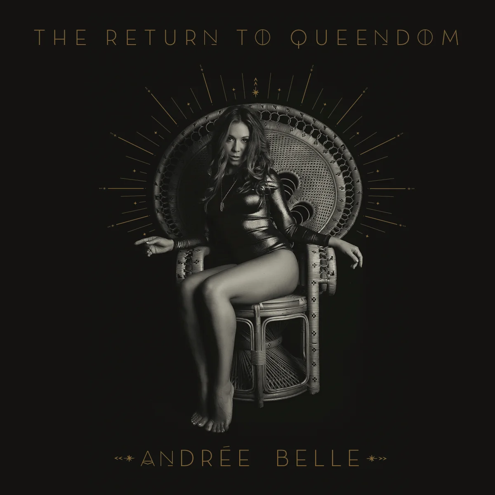
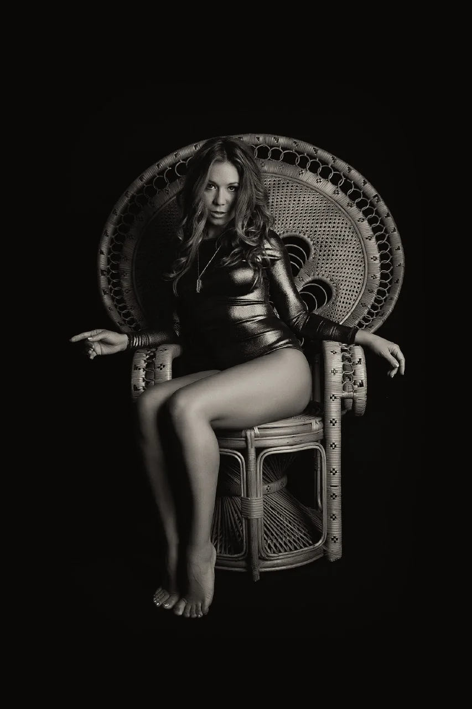
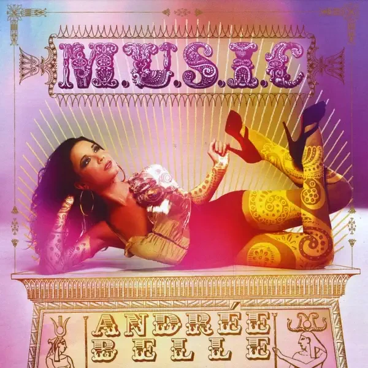
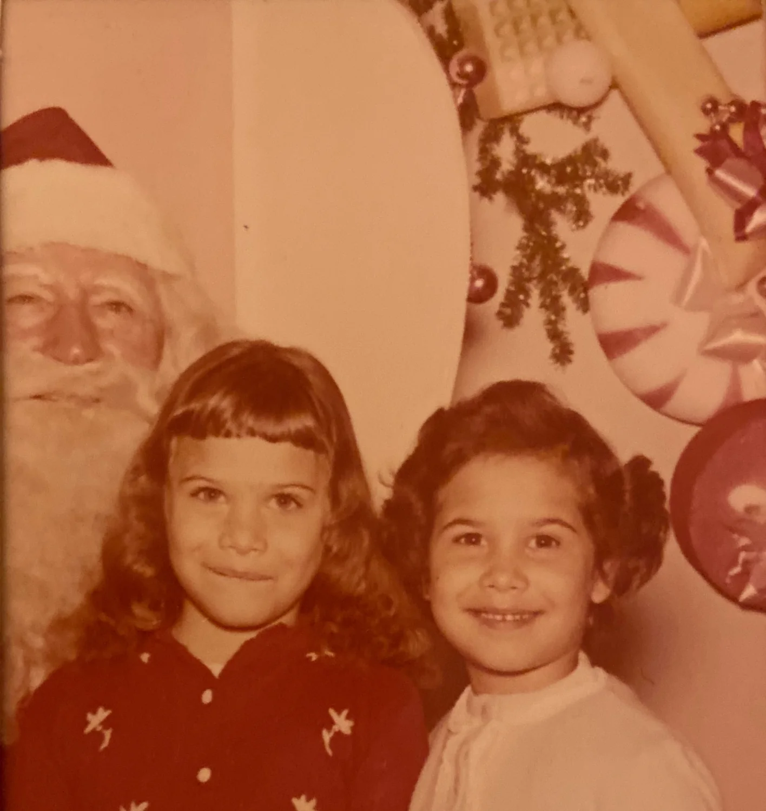
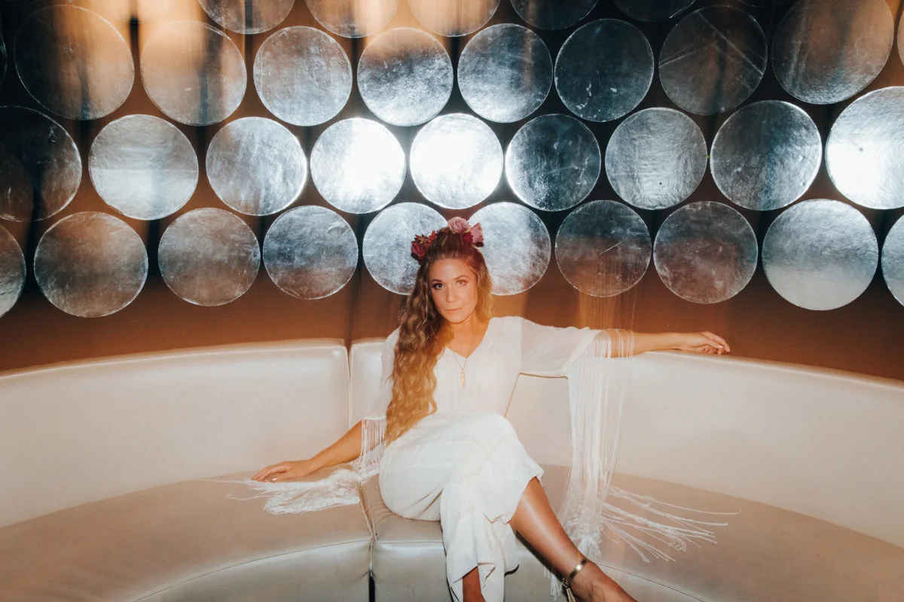
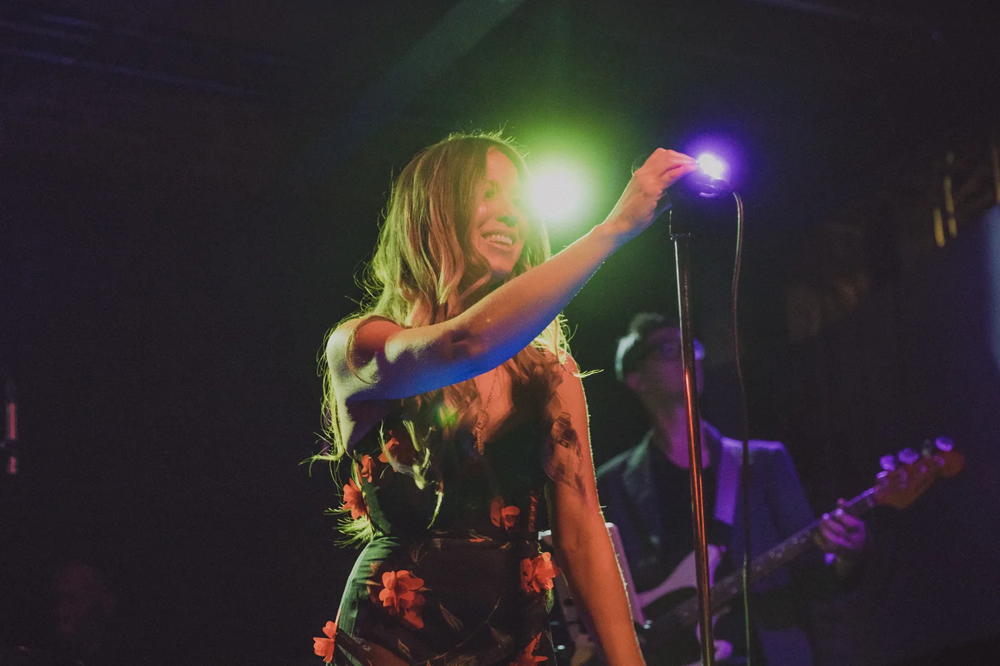

Remix album
Queendom Recalibrations
A kaleidoscopic reimagining with Mono/Poly, Jimetta Rose, MAST, Malik Abdul-Rahmaan, ill Camille, Brandon Coleman, Lil Dave, Jonah Levine, and more.
Listen on Bandcamp ↗
Singer · Songwriter · Dancer · Poet · Educator
Soulful sound. Poetic vision.
A world of luminous transformation.
Herstory

Andrée Belle is a singer, songwriter, dancer, poet, and educator whose work joins timeless vocal warmth with adventurous, genre-spanning artistry.
A southern native of Puerto Rican heritage, she was born in Georgia and grew up in North Carolina. She studied classical voice before relocating to Los Angeles to study jazz at the University of Southern California. Her soulful, sultry tone, emotionally captivating nuance, and expansive range shape concept-driven projects filled with provocative poetry and empowering messages.
Her releases move from the radiant holiday jazz of Vintage Christmas to the reclamation and freedom of The Return to Queendom, the electronic reinvention of Queendom Recalibrations, and the dark, otherworldly soul of The Soft Glow of Electric Sex.
Andrée’s debut, M.U.S.I.C. (Magnificent Unique Sexy Intelligent Creativity), earned television placements. Her passionate live performances and world-class band created a strong following in Los Angeles, and her original music later appeared on AXS Live.
As Director of Music and Movement for The Art of Elysium, she cultivated more than 40 music and dance programs a month, serving over 13,000 people across greater Los Angeles each year. Her work brought bedside performances to children and adults and engaging concerts to unhoused communities in Skid Row.
Her passion for dance led her to study Afro-Cuban dance with Raíces Profundas in Havana. She is also developing Caribbean Girl hot sauce, writing poetry and new music, and pursuing an MFA in VoiceArts Performance with an Arts Education concentration at CalArts. She approaches education as a path toward authentic expression, collaboration, empathy, and a more conscious world.
The music
Jazz, soul, electronics, poetry, rhythm, and the unmistakable warmth of Andrée’s voice.

Remix album
A kaleidoscopic reimagining with Mono/Poly, Jimetta Rose, MAST, Malik Abdul-Rahmaan, ill Camille, Brandon Coleman, Lil Dave, Jonah Levine, and more.
Listen on Bandcamp ↗
Studio album
A journey of reclaiming power and transmuting painful experience into joy, expansion, love, and freedom.
Listen on Bandcamp ↗
Studio album
An otherworldly, dark, electro-soulful exploration of love.
Listen on Bandcamp ↗
Debut album
Magnificent Unique Sexy Intelligent Creativity: an eclectic soul record that introduced Andrée’s singular musical universe.
Listen on Apple Music ↗
✦✧A seasonal spell
A holiday jazz record evoking the warmth, magic, and beauty of the season, with a loving nod to Ella Fitzgerald, Peggy Lee, and Julie London.
Vocals — Andrée Belle · Guitar and string arrangements — Tim Conley · Piano — Doug Carter · Bass — Cooper Appelt · Drums — James Yoshizawa · Percussion — José Perez · Strings — Rita Isabel Andrade, Eleanor Dunbar, Zack Reaves, and Megan Shung.
Recorded at Tritone and Fireflower Studios. Engineered by Talley Sherwood, Harriet Tam, and Cooper Appelt. Mixed by Ben Burget. Mastered by David Donnelly.
Live

“Her soulful, sultry, rich, timeless tone transforms every room.”
For concerts, festivals, private events, collaborations, and creative projects, contact Andrée directly.
Performance inquiriesPhotos
Press

Voice & artistry
Guiding students toward their authentic sound is one of Andrée’s deepest passions. Every journey begins with your unique goals, then unfolds through focused vocal technique in a positive, playful, and encouraging environment. All styles, ages, and levels are welcome.
Lessons are offered in person and via Zoom, with sliding-scale pricing.
Begin your journeyContact
Performance bookings, press, collaborations, teaching, and all other inquiries.
andreebellemusic@gmail.com